Python and numerical methods
16 curated items
Supporting material in Python and numerical methods10 items
Reference notes
7 curated items
Supporting material in Reference notes1 items
Problem set 1: ODEs and integration
24 curated items
Supporting material in Problem set 1: ODEs and integration18 items
Problem set 2: numerical methods
24 curated items
Supporting material in Problem set 2: numerical methods18 items
Problem set 3: applications
9 curated items
Supporting material in Problem set 3: applications3 items
Project 1
11 curated items
plot_exact.py
Python script that reads the data in exact_data{N}.txt and plots the exact solution of the Poisson equation, u(x). Output: 'figures/exact.pdf'
general_vs_exact.py
Plots the general approximations from approx_general.txt against the exact values exact_data.txt. Output: 'figures/general_vs_exact.pdf'
errorplot.py
Supporting material in Project 15 items
Project 2
10 curated items
Our results are summarized in a [project report](report_project2.pdf)
Description
The main topics of this project was: - scaling of equations - eigenvalue problems - unit testing
We considered a horizontal beam of length L fastened with pin endpoints. The vertical displacement were denoted as u(x), and we were interested in studying the different static shapes the beam (u(x)) can take due to an applied force at the endpoint directed into the beam.
The situation is described as
Supporting material in Project 24 items
Project 3
29 curated items · 3 result figures
Folder for results from main.cpp
Problem 9:The filenames indicate the parameters for problem 9:
The filenames indicate the parameters in the following way:
{type of algoritm}\_i\_{iterations}\_d\_{duration}\_p\_+{particles}+\_pi\_+{interactions}+
![Penning Trap]()
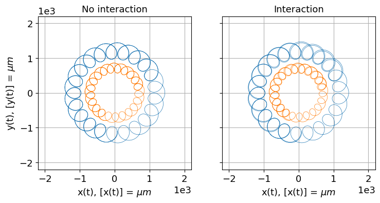
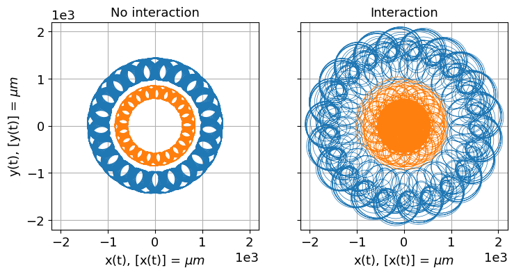
Supporting material in Project 323 items
Project 4
26 curated items
This folder contains all datafiles produced by our source files. These datafiles are used to plot the figures you can find in the 'figures/' folder.
Supporting material in Project 420 items
Project 5
23 curated items · 5 result figures
Folder content
This folder is the default save location for all the datafiles produced by the prorgam. As the datafiles are large binary files, we are not able to upload them to git. This folder is therefore empty, and may just contain a dummy file so that the folder is included if the repository is cloned.
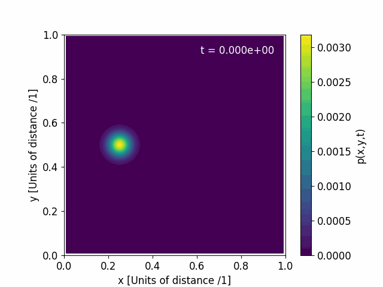
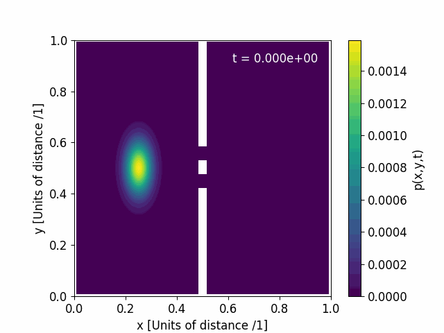
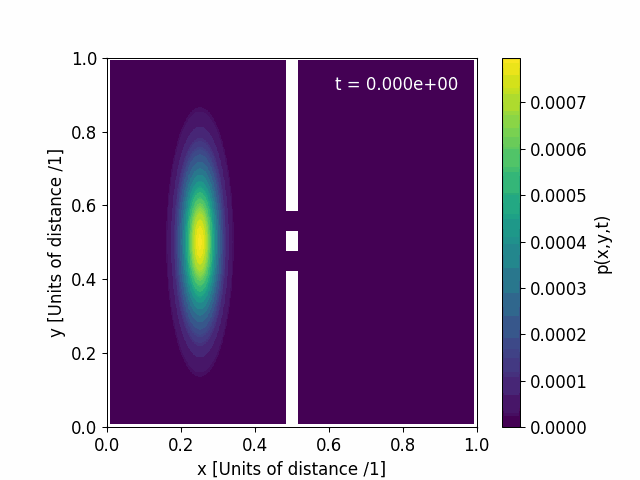
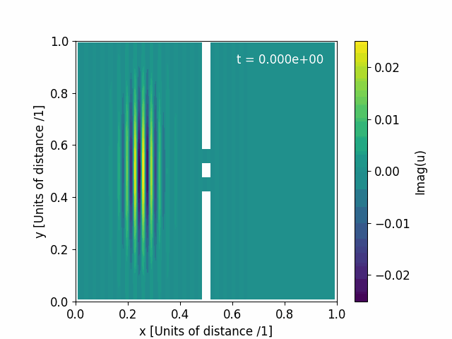
Supporting material in Project 517 items
Project 6
12 curated items · 7 result figures
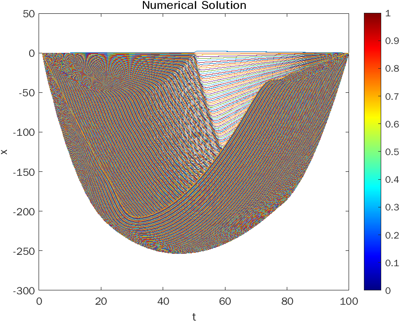

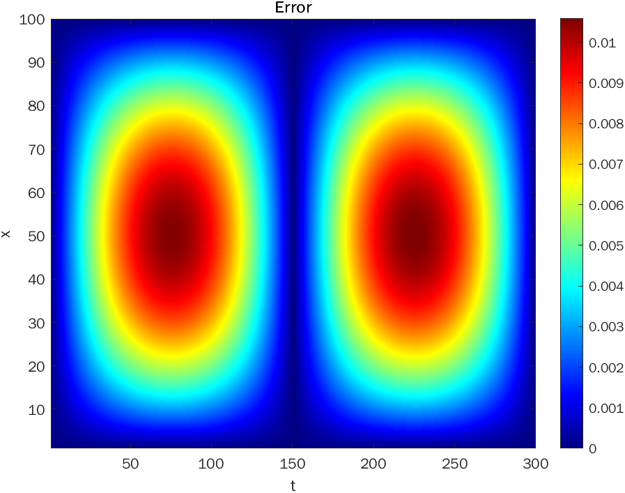
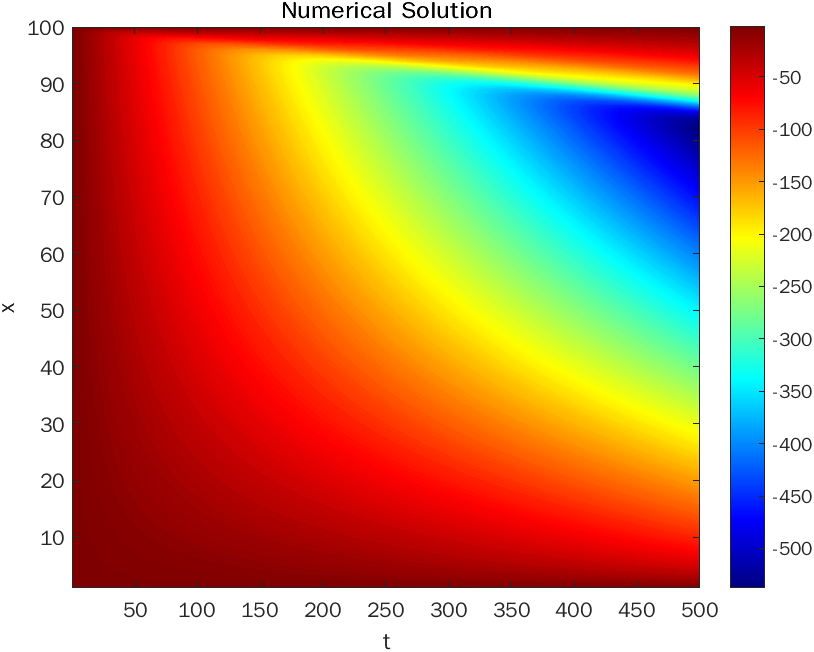
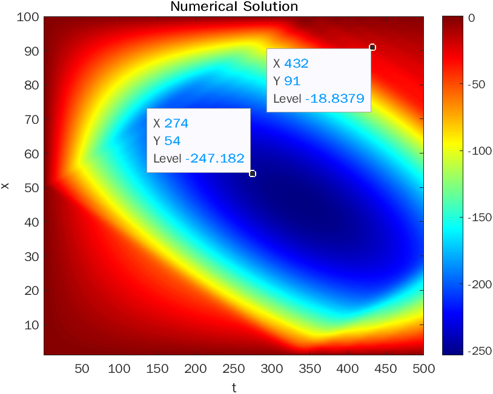

Supporting material in Project 66 items
Project 7
12 curated items · 8 result figures
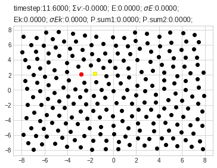
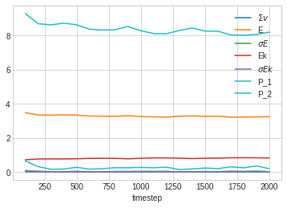
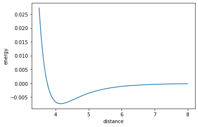
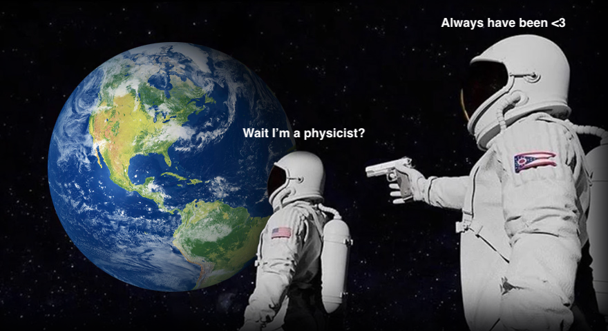


Supporting material in Project 76 items
Project 8
7 curated items · 1 result figure
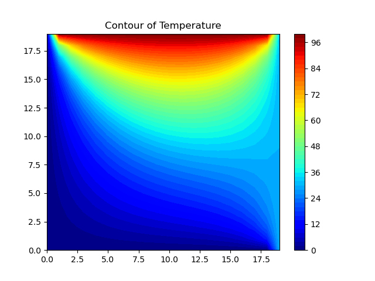
Supporting material in Project 81 items
Project 9
5 curated items